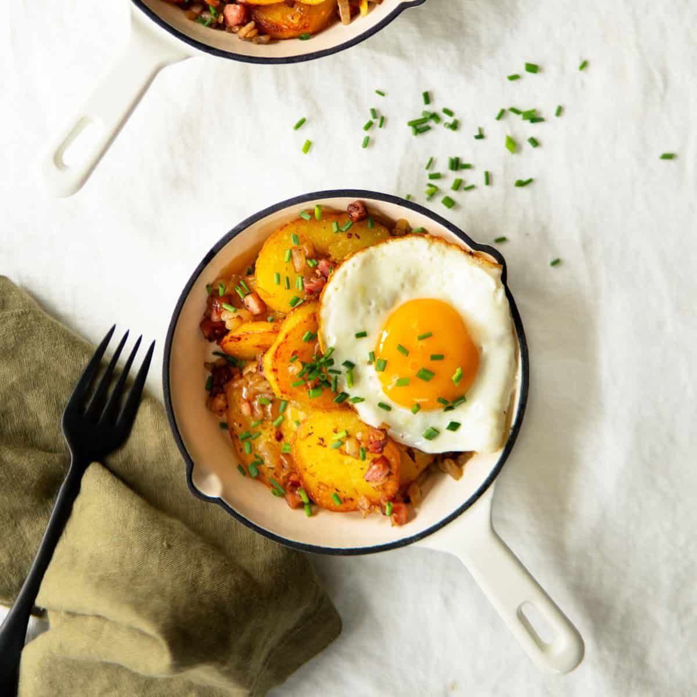

Home
Bratkartoffeln (Fried Potatoes)

Description
Bratkartoffeln are a classic German side dish made from sliced or diced potatoes, pan-fried until golden and crispy.
Often cooked with onions and sometimes bacon, they’re simple yet flavorful. Served hot, they pair well with eggs, sausages, or as a hearty addition to any meal.
ingredients
- waxy boiled potatoes
- onion
- eggs
- butter
- oil
- salt and pepper
Steps
- cut potatoes into round slices
- fry onions on medium heat till they soften
- add the sliced potatoes
- mix well und fry until colden and crispy
- pour mixed eggs over the potatoes
- season with salt and pepper
- cook until the eggs are done but not too dry
- sprinkle some herbs
- enjoy!